How to use HatRack
Every screen, menu and setting, shown on the real thing. Choose Daily use to learn capturing, sorting and exporting, or Setting up for groups, fields, backups and putting HatRack online.
All sections
- Start here
- HatRack in one minute
- How work is organized
- Daily use
- Capture tasks
- Import long lists
- Triage
- Sort on the board
- Subtasks & subnotes
- The task editor
- List, Outline, Reports
- Export
- Setting up
- Setting up
- Groups & levels
- Types, priorities, statuses
- Custom fields
- Backups & templates
- Put it online
- Reference
- Keyboard
- Phones & dark mode
- Questions
- What’s new
HatRack in one minute
Capture everything, sort it onto the right hat, export it where you work.
HatRack is a sorting table for everything you’ve written down. Paste in lists from notes apps, emails and notebooks, hang each item on the business, project or part of life it belongs to, then hand the finished lists to the task app you already use. It runs in your browser and keeps your data on your device.
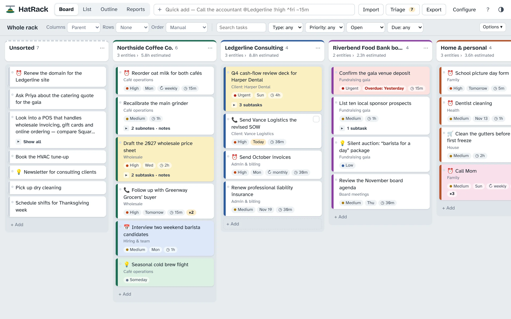
- 1Views. Board for sorting, List for editing in a table, Outline for a printable document, Reports for the numbers.
- 2Quick add. Type a task and press Enter. Shortcuts like
@group,!highand^frifill in the details. - 3Import. Paste a long list, or open a .txt, .md or .csv file.
- 4Triage. Sort unsorted tasks one at a time. The badge shows how many are waiting.
- 5Export. Send tasks to Todoist, Asana, a spreadsheet, a calendar and more.
- 6Configure. Groups, types, priorities, statuses, durations, custom fields and backups. Usually set up once.
- 7Help. Opens this guide or the shortcuts sheet.
- 8Where you are. The whole rack, or a group you’ve opened. Click any part to go back up.
- 9Columns, rows and order. Choose what the columns mean, add rows to make a grid, and pick how cards are ordered.
- 10Search and filters. Narrow by words, type, priority, status or due date. Shows open tasks by default.
- 11Options. Compact cards, expand or collapse every card, and whether dropping moves or copies.
- 12Unsorted. New tasks wait here until you give them a home.
- 13A group. Click its name to open it and sort into the next level down. Shows the task count and estimated hours.
- 14A task card. Click to open the editor. Drag to move it.
- 15Folded details. Notes, subnotes and subtasks stay tucked away until you expand the card.
- 16Card color. Tint any card so it stands out.
Who does what
Daily use
Anyone sorting their own work
- Capture and import notes
- Triage and sort on the board
- Nest subtasks; add notes, links and files
- Review in List, Outline and Reports
- Export to Todoist, Asana, spreadsheets, calendars
Setting up
Whoever owns the structure and the backups
- Name the levels; add parents, entities and sub-branches
- Write keywords so imports sort themselves
- Choose task types, priorities, statuses, durations, custom fields
- Back up, restore, and share a setup template with a team
- Put HatRack online and install it on phones
HatRack has no logins or permissions. “Admin” here means the person who sets up the groups and looks after backups. On a team, that person shares a setup template so everyone sorts into the same structure.
The daily loop
- CaptureQuick add, or jot notes anywhere you like.
- ImportPaste the pile. Headings and keywords sort most of it.
- TriageHang up the leftovers, one key press each.
- Sort & refineDrag, nest subtasks, set dates and time.
- ExportSend each sector to the app you work in.
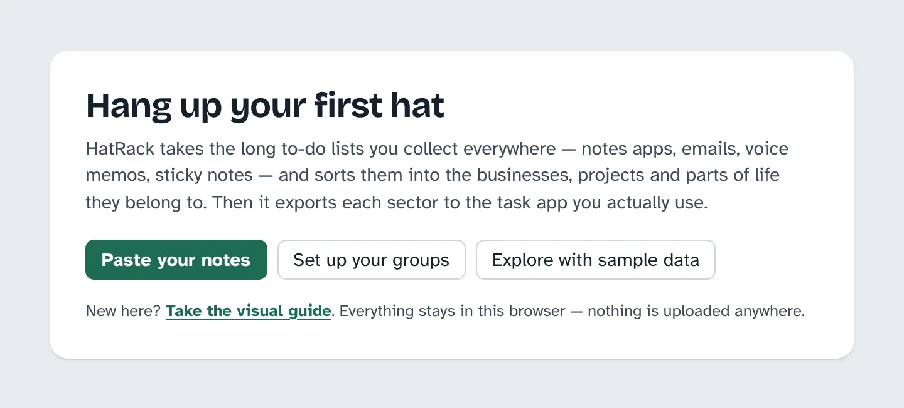
- 1Paste your notes opens Import.
- 2Set up your groups opens Configure.
- 3Explore with sample data loads four example businesses and obligations to practise on.
- 4The guide opens right inside HatRack.
How work is organized
Two trees: groups say where a task belongs; tasks can hold subtasks and subnotes.
Groups — where a task belongs
Rename the levels in Configure — Business › Department › Project, for example.
Tasks — what needs doing
Give a step its own date, priority or status? Make it a subtask. Just a box to tick? A subnote.
Reading a card
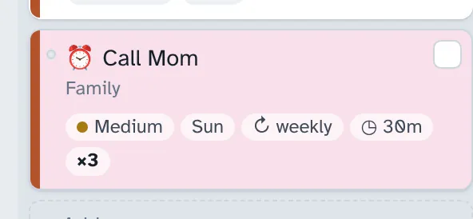
- 1Type icon. ⏰ Reminder, 💡 Idea, 📞 Follow-up and so on — set them in Configure.
- 2Title. Up to three lines show; longer titles fold.
- 3Where it lives below the column you’re looking at.
- 4Priority.
- 5Due date in plain words: Today, Tomorrow, Fri, Nov 14. Overdue turns red.
- 6Repeats. Marking it done schedules the next date instead of closing it.
- 7Estimated time.
- 8Noted ×3. You wrote this down three times; HatRack merged the copies into one card.
- 9Select box. Appears on hover, and always on touch screens.
- 10Group stripe in the parent’s color. The pink tint is the card’s own color.
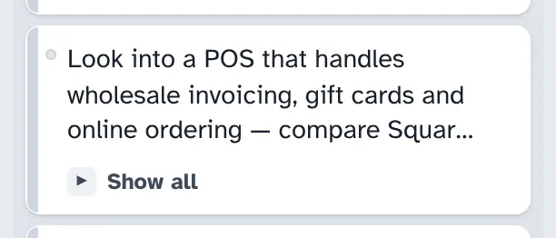
- 1Three lines, then it folds.
- 2Show all opens the full text.
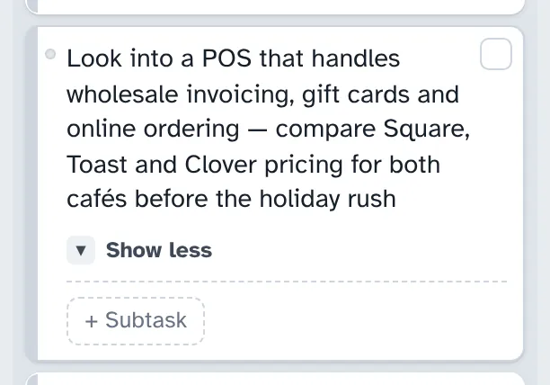
- 1Show less folds it again.
Long entries never take over a column. Options → Expand every card opens them all at once; Collapse every card gets the space back.
Folded and expanded
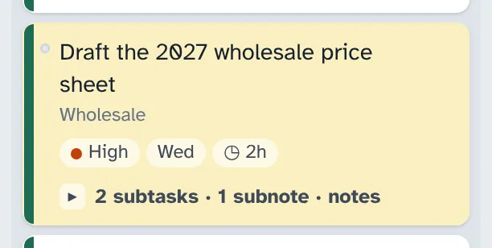
- 1The summary tells you what’s folded inside: subtasks, subnotes, notes.
- 2A card color (yellow here).
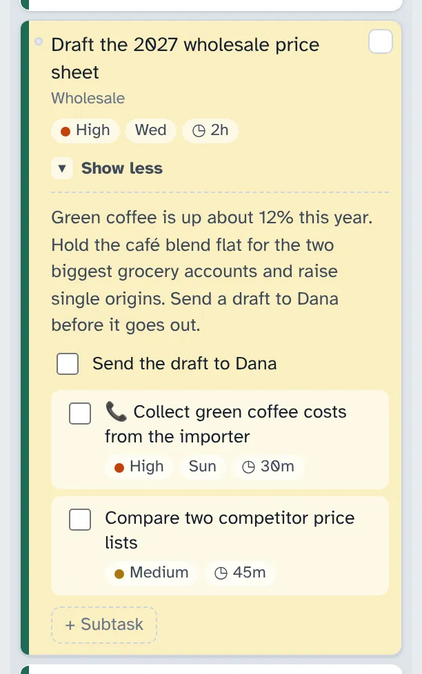
- 1Show less folds the card.
- 2Notes, with clickable links.
- 3Subnotes tick off right on the card.
- 4Subtasks. Click one to open it; drag it to move or re-nest it.
- 5Done box for a subtask.
- 6+ Subtask adds another. Shortcuts work.
Capture tasks
Quick add takes plain language plus a few shortcuts.
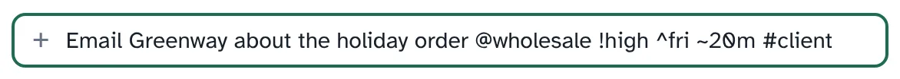
Email Greenway about the holiday orderTitle@wholesaleGroup — matches the start of a name!highPriority — a name, or !1 for the first^friDue — today, tomorrow, fri, 11/14, nov14, +3d, eom~20mTime — 15m, 1h30m, 2d#clientTag — or a type, if it matches one (#Reminder)| Type | Means | Examples |
|---|---|---|
@ | Group | @northside @Ledgerline/Admin @"Home & personal" |
# | Type, or a tag | #Reminder #idea #client |
! | Priority | !high !1 !someday |
~ | Estimated time | ~15m ~1h30m ~2d |
^ | Due date | ^today ^fri ^11/14 ^+3d ^eom |
* | Repeats | *daily *weekdays *weekly *monthly *yearly |
- Words work too. “Remind me to…” becomes a Reminder. A line starting
Idea:orFollow-up:sets the type. “every Monday” sets a weekly repeat. - Add into a column. Every column has + Add at the bottom; a task added there takes that column’s value.
- Paste from anywhere. Copy text in any app and press Ctrl/⌘V on the board. One line becomes a task; several lines open Import. Hover a column first to send it there.
- Drop files. Drag a .txt, .md or .csv file onto a column to import it into that column.
Import long lists
Paste a pile of notes and watch them sort themselves.
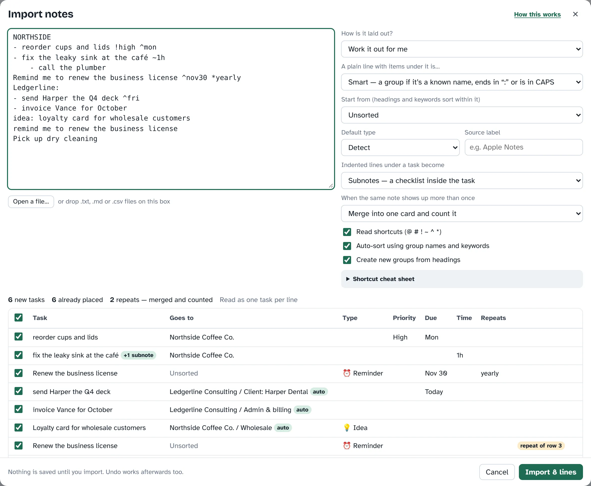
- 1Paste here. Messy is fine: headings, bullets, indents, checkboxes.
- 2Or open files — .txt, .md or .csv. You can drag them onto the box too.
- 3Layout. Let HatRack work it out, or choose one task per line, blocks split by blank lines, or spreadsheet rows.
- 4Group lines. When a plain line with items under it counts as a group.
- 5Start from a group. Headings and keywords then sort inside it.
- 6Indented lines become subnotes (a checklist) or subtasks (full tasks).
- 7Repeats. Merge into one card and count them, keep every copy, or skip them.
- 8Switches. Read shortcuts, auto-sort by keywords, create new groups from headings.
- 9The summary says what will happen before anything is saved.
- 10auto means a keyword placed it; new marks a group this import will create.
- 11Repeat badges show which lines merge.
- 12Import. Undo works afterwards too.
- 13How this works opens this guide at the right section — every dialog has one.
What HatRack reads
| You write | HatRack makes |
|---|---|
Northside: · # Personal · ## Health · NEW VENTURE | A group (matched to an existing one by name or keyword, or created) |
- item · 1. item · [ ] item | A task. [x] marks it done. |
| Lines indented under a task | Subnotes, or subtasks if you choose — several levels deep |
| Blocks split by blank lines | First line is the title, the rest becomes notes |
| Spreadsheet rows with a header | Columns mapped by name: Title, Notes, Project, Due, Priority, Estimate, Tags, Color, Parent ID… |
| A Todoist CSV export | Sections, priorities, dates, durations and sub-tasks |
Triage
One task at a time, one key press each. The fastest way through a long list.
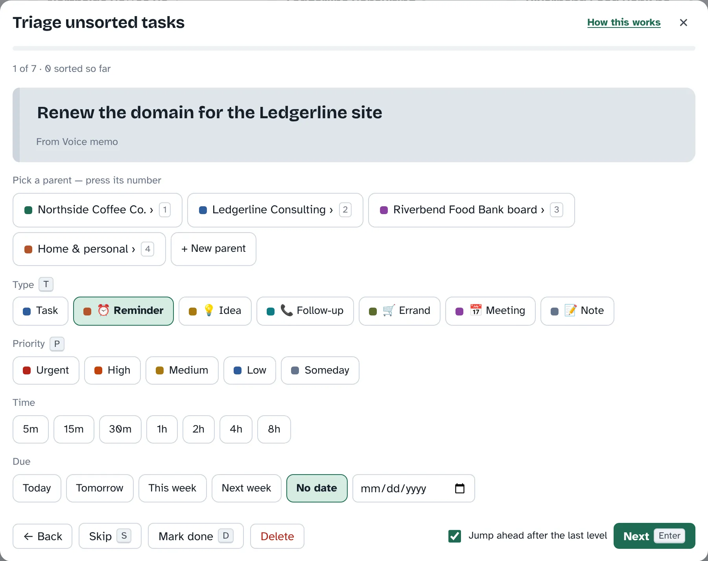
- 1Progress.
- 2The task. Fix the title right here.
- 3Pick a group. Groups marked › have another level: you pick again to go deeper.
- 4Number keys 1–9 pick a group.
- 5+ New makes a group on the spot.
- 6Type and priority. Press T or P to cycle through them.
- 7Quick dates or pick one.
- 8Skip (S), Back (←), Mark done (D), Delete.
- 9Jump ahead moves to the next task once you’ve picked the last level.
- 10Next (Enter) keeps what you chose.
Open a group first (click its column name) and Triage sorts only that group’s “not yet sorted” tasks into its entities.
Sort on the board
Drag to move, drop on a card to nest, open groups to go deeper.
- Columns set values. Drop on “High” and the task becomes high priority; drop on a group and it moves there.
- Copy instead of move: hold Alt/Option as you drop, or choose Options → “Dropping copies the card”.
- Several at once: select cards first, then drag any one of them.
- Subtasks: drag one out onto a column to make it a top-level task again.
Move a card
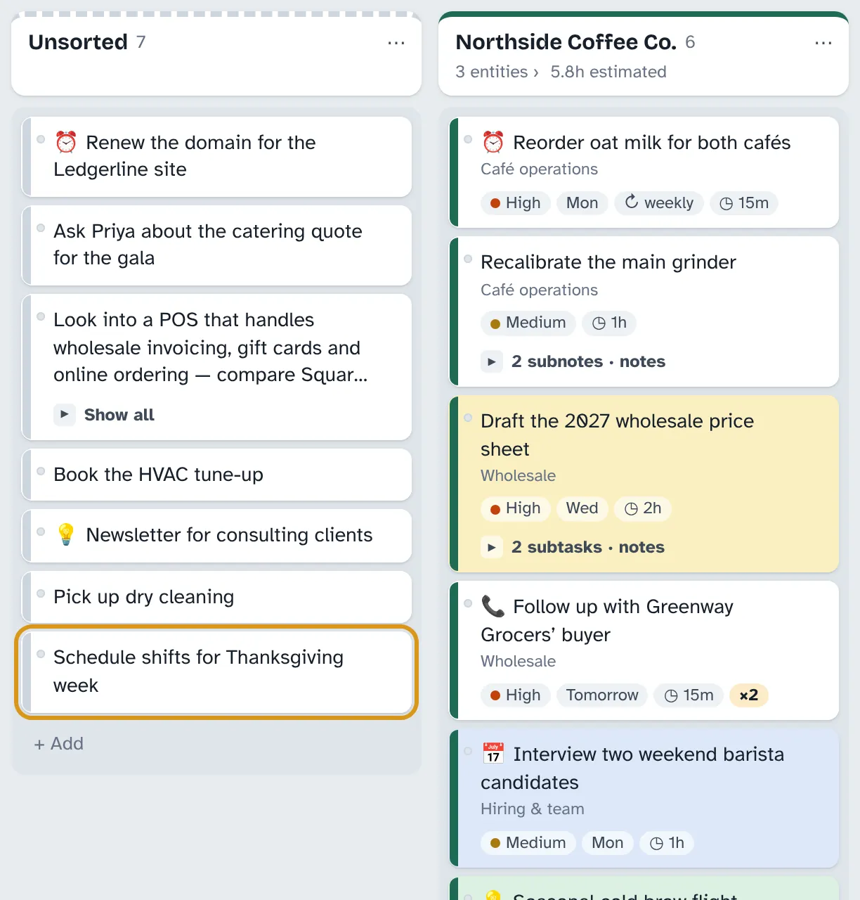
1Pick up the card.
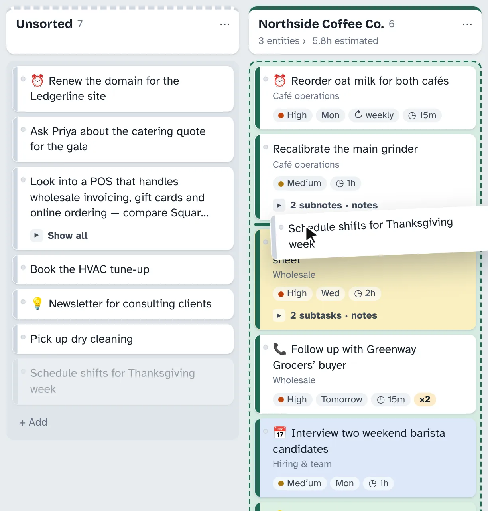
2The column lights up and a line shows where it will land.
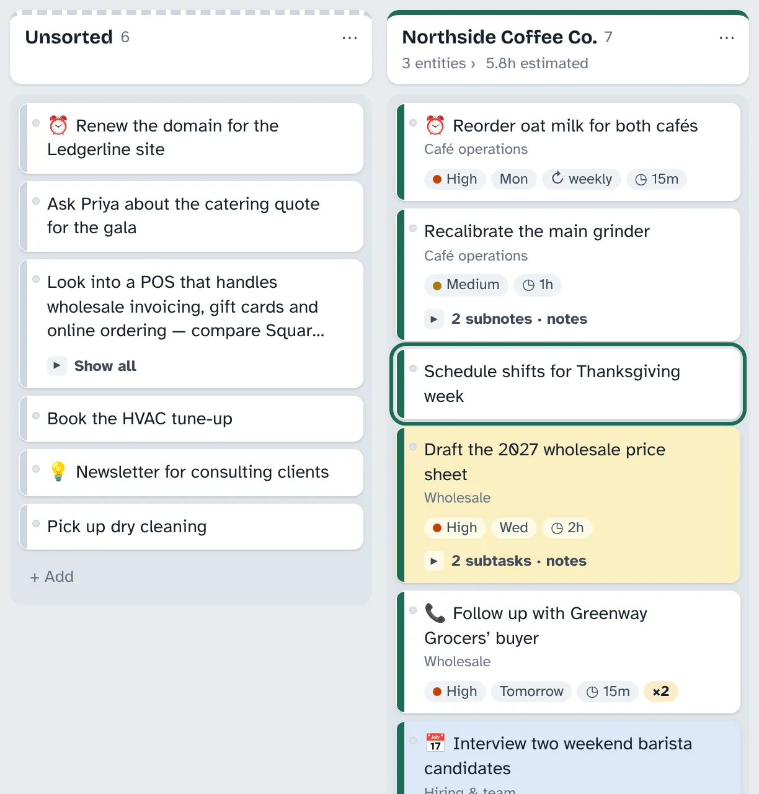
3Dropped. It now belongs to Northside Coffee Co.
Nest a card under another
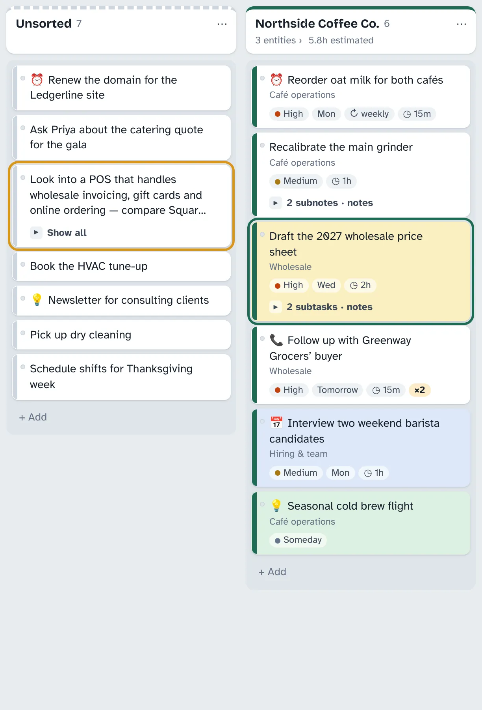
1Drag a card toward another card.
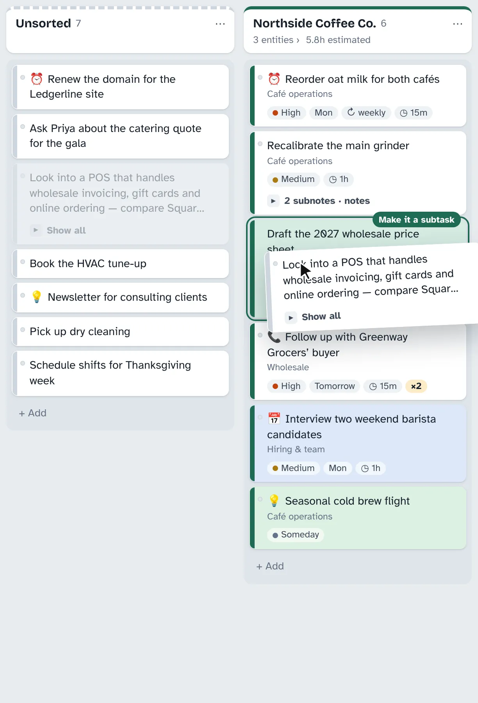
2Over the middle, the target turns green: “Make it a subtask”.
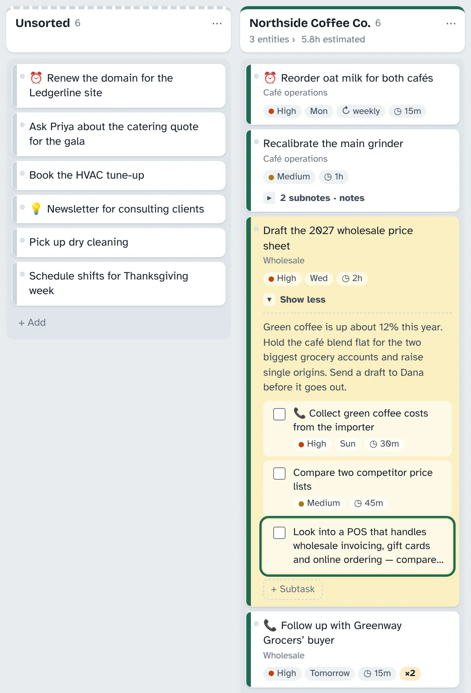
3It now lives inside that card, keeping its own dates and status.
Open a group to sort deeper
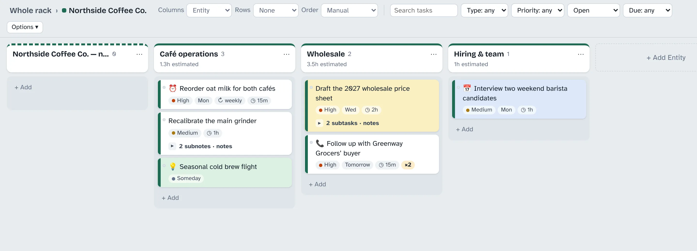
- 1Breadcrumb. Click “Whole rack” to go back up.
- 2Not yet sorted: tasks filed under the parent but not an entity.
- 3Each entity is now a column. Its sub-branches open the same way.
Columns × rows
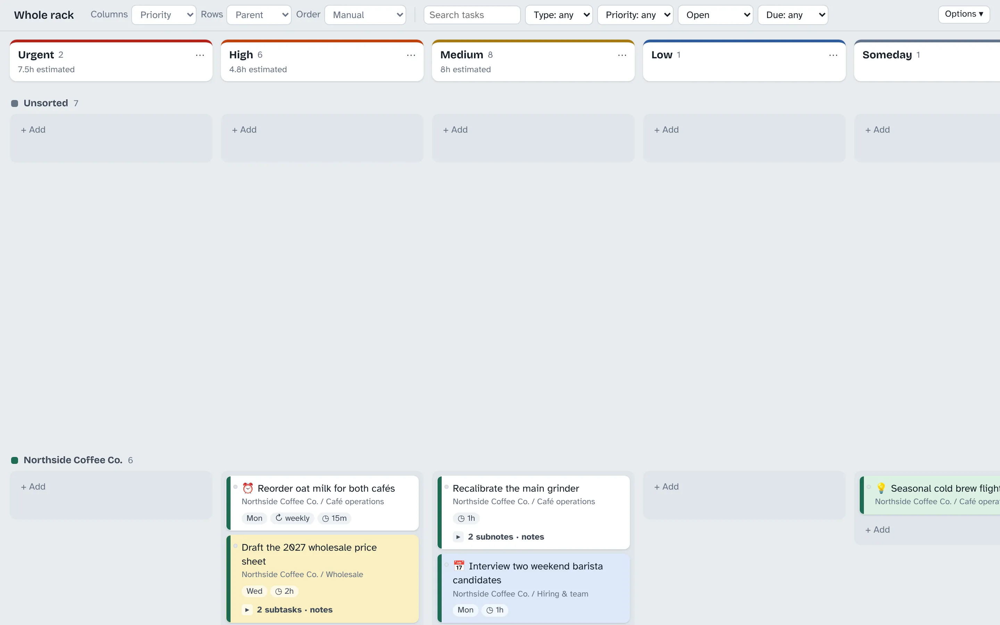
- 1Columns set to Priority.
- 2Rows set to Parent.
- 3Each column is a priority.
- 4Each row is a parent.
- 5Drop in a cell to set both at once.
Select and act in bulk
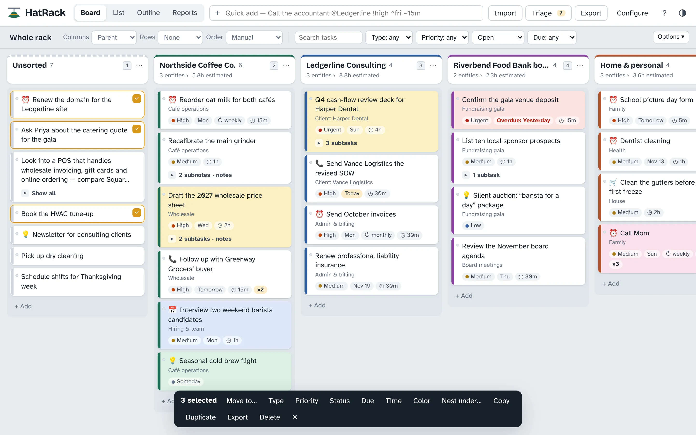
- 1Selected cards. Ctrl/⌘-click, Shift-click for a range, or the tick box.
- 2Number keys 1–9 send the selection to that column.
- 3Move to any group at any level.
- 4Nest under a task you pick from a list — handy on phones.
- 5Color the whole selection.
- 6Export just these. Also Copy, Duplicate and Delete.
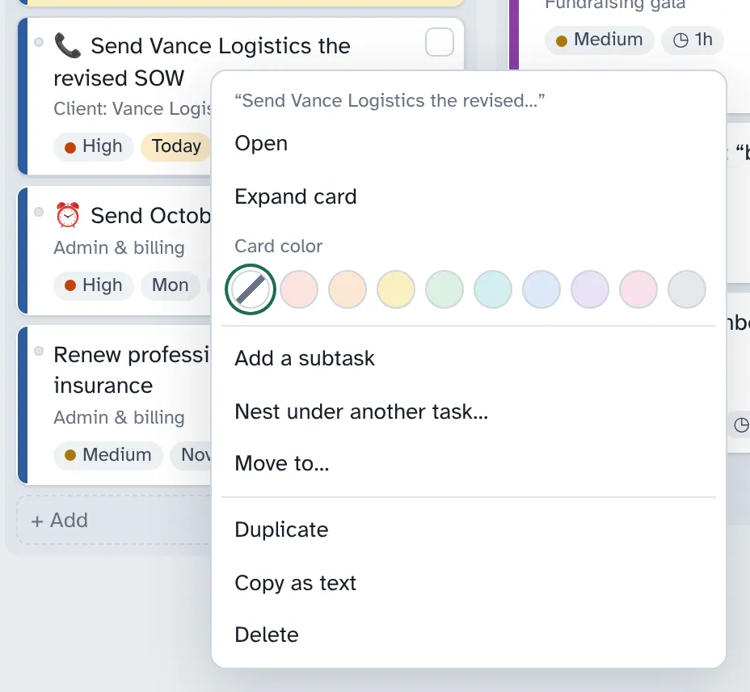
- 1Card color.
- 2Add a subtask.
- 3Nest under another task, wherever it is.
- 4Move to any group.
- 5Duplicate copies subtasks too.
Copy and paste cards
- Ctrl/⌘C copies selected cards, subtasks included.
- Hover a column and press Ctrl/⌘V to paste them there.
- Paste into another app and you get plain text with shortcuts, ready to re-import.
- Each column’s ⋯ menu copies the whole column as a list or a Markdown checklist, or exports it.
Subtasks & subnotes
Subtasks are full tasks inside another task. Subnotes are a simple checklist.
| Subtask | Subnote | |
|---|---|---|
| Own type, priority, status, time, due date, repeat | Yes | No |
| Can hold its own subtasks | Up to three levels | No |
| Shows on the board | Inside its parent’s card | Inside its card, as a checklist |
| In exports | Indented under the parent (Todoist sub-tasks) | Checklist lines |
| Best for | Steps that need their own date or owner | Quick boxes to tick |
Make a subtask
- Drag a card onto the middle of another card — on the board or in the outline.
- Expand a card and click + Subtask.
- Type it into the editor’s Subtasks box. Shortcuts work.
- Right-click → Nest under another task…
- Import with “Indented lines become subtasks”.
- Turn a subnote into a subtask with ⇪ in the editor.
Undo it
- Drag it out onto a column, or onto a group heading in the outline.
- ⇱ Make top-level in the editor or the right-click menu.
- ⇩ Turn into a subnote when it doesn’t need its own fields.
- Ctrl/⌘Z undoes any move.
- Subtasks always share their parent’s group. Move the parent and they come along.
- Deleting a task deletes its subtasks — Undo brings them all back.
- When a repeating task moves to its next date, its subtasks and subnotes reset to not done.
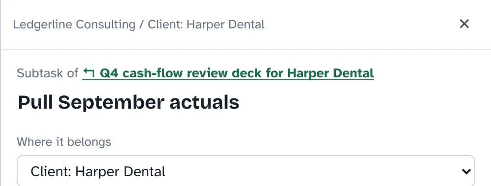
- 1The parent link. A subtask’s editor shows where it sits and links back up.
The task editor
Everything about one task, in a panel on the right.
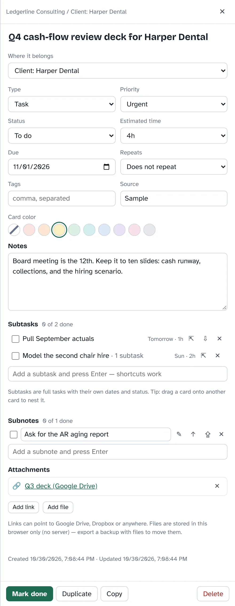
- 1Where it lives. For a subtask, this also links to its parent.
- 2Title.
- 3Where it belongs: any group at any level.
- 4Details: type, priority, status, time, due, repeat, tags, source and your custom fields.
- 5Card color.
- 6Notes, as long as you like. The card shows them only when expanded.
- 7Subtasks. Tick, open, ⇱ make top-level, ⇩ turn into a subnote, ✕ delete.
- 8Add a subtask. Shortcuts work.
- 9Subnotes. ✎ gives one its own note; ⇪ turns it into a subtask.
- 10Attachments. Links to Drive, Dropbox or anything; files are kept in this browser.
- 11Mark done (for repeats: schedule the next one), Duplicate, Copy, Delete.
Click any card or list row to open it. Changes save as you type; Esc closes the editor, and Ctrl/⌘Z undoes the whole editing session.
Attachments need nothing extra: links are saved with the task, and files go into the browser’s own storage. Files don’t travel between devices on their own — tick “Include stored attachment files” when you back up.
List, Outline and Reports
The same tasks as a table, a document, or a set of numbers.
List
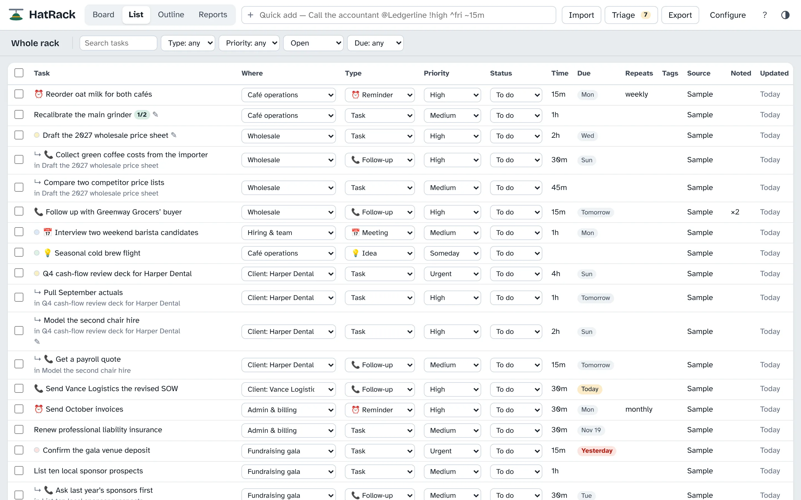
- 1Sort by any column; click again to reverse.
- 2Change values in place: group, type, priority, status.
- 3Subtasks show ↳ and the parent’s name.
- 4Select rows for the bulk actions bar.
Outline
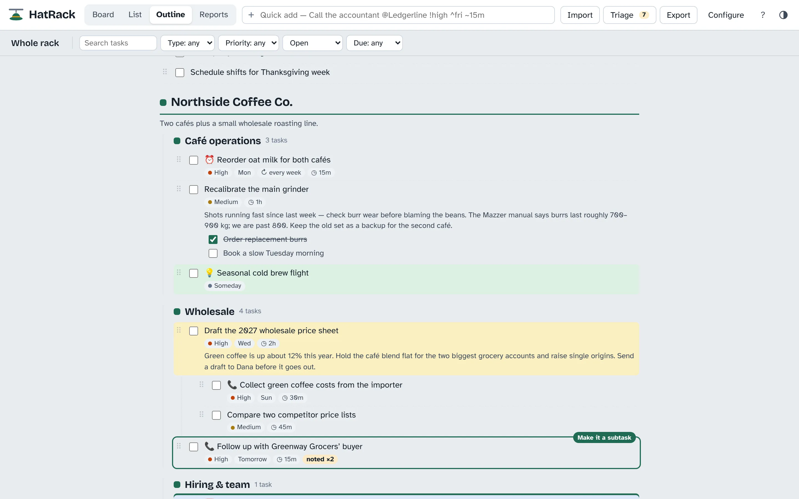
- 1Copy as Markdown, download it, or print / save as PDF.
- 2Drag handle. Drag a task to move or nest it.
- 3Drop on a heading to move a task — or a subnote — into that group.
- 4Subtasks indent under their task.
- 5Drop on the middle of a row to make it a subtask.
- 6Drop on the top or bottom edge to place it before or after.
Subnotes drag too: drop one on another task to move it there, or on a heading to turn it into a task of its own.
Reports
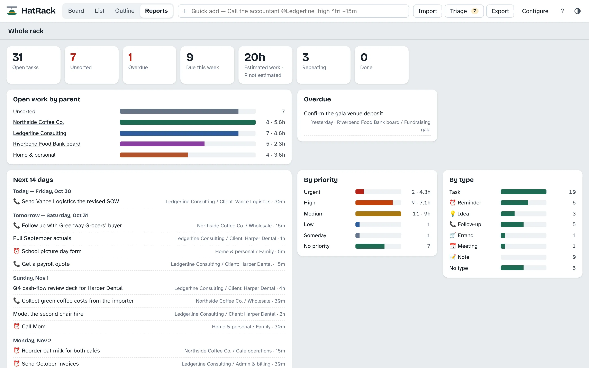
- 1Counts: open, unsorted, overdue, due this week, estimated hours.
- 2Open work by group — click a name to open it.
- 3Overdue.
- 4The next 14 days, by date.
- 5Things you keep writing down — the merged repeats. Often a sign something needs a decision.
Export
Send each sector to the app you work in.
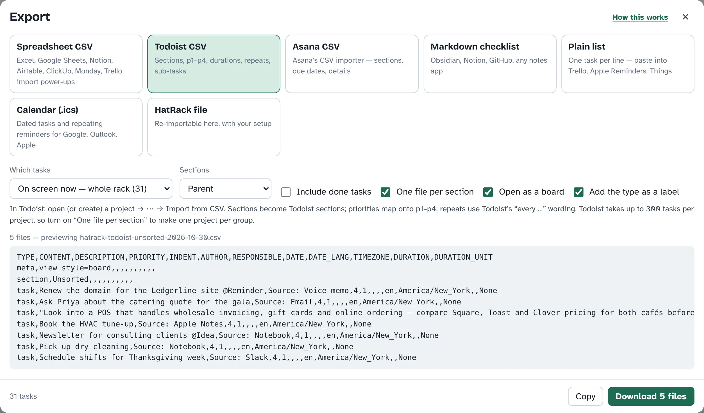
- 1Pick a format.
- 2Which tasks: on screen now, everything, a selection, or one column.
- 3Sections: by parent, parent + entity, full path, type, priority, status or due date.
- 4Include done tasks if you need them.
- 5One file per section — one project per business, for example.
- 6How to import into the app you picked.
- 7Preview of the file.
- 8Copy to paste straight in.
- 9Download the file — or files.
Where is it going?
| Destination | Choose | Then |
|---|---|---|
| Todoist | Todoist CSV | Project → ⋯ → Import from CSV. Sections, p1–p4, dates, durations and sub-tasks come across. Todoist takes 300 tasks per project — turn on “One file per section”. |
| Asana | Asana CSV | Project → Add tasks via → CSV, then map Section and Due Date. Subtasks arrive as tasks marked “Subtask of …”. |
| Excel, Google Sheets, Notion, Airtable, ClickUp, Monday | Spreadsheet CSV | Use the app’s CSV importer. Every level, the parent task and the color are their own columns. |
| Trello, Apple Reminders, Things, Microsoft To Do | Plain list | Paste it: each line becomes a card or to-do. |
| Obsidian, Notion, GitHub issues | Markdown checklist | Paste it or open the .md file. Checkboxes stay checkable. |
| Google, Outlook or Apple Calendar | Calendar (.ics) | Dated tasks become all-day events; repeating reminders keep their schedule with a 9 am alert. |
| Another computer | HatRack file | Configure → Data → Restore. |
Setting up HatRack
A short checklist, then the details.
Most of this happens once, in Configure (top right). Whoever does it is the “admin” for this guide — there are no accounts or permissions in HatRack.
- Name your levels. Parent › Entity › Sub-branch, or your own words.
- Add your groups. Every business, organization, obligation and “Personal”, then what sits inside each.
- Write keywords. The words that should send a note to each group.
- Tune the lists. Task types, priorities, statuses and time estimates.
- Add custom fields if you track anything else — client, energy, location.
- Share a setup template so others start with the same structure.
- Put HatRack online and add it to your phone’s home screen.
Groups & levels
The tree every task hangs on.
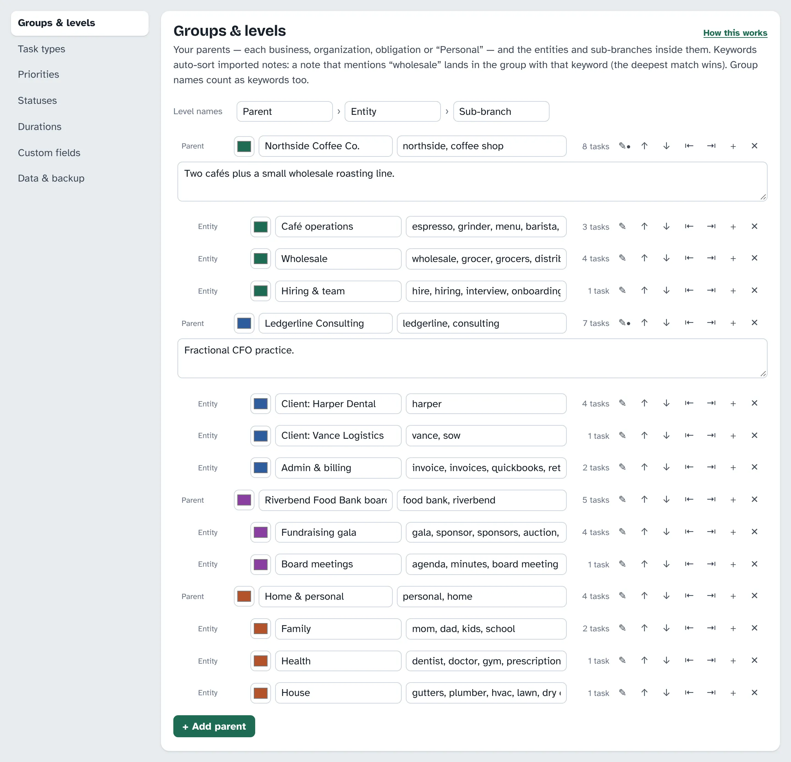
- 1Configure sections.
- 2Level names. Rename them to match how you talk.
- 3Color for a parent; its entities inherit it.
- 4Name.
- 5Keywords. Comma-separated words that send a note here. The deepest match wins; group names count too.
- 6Task count, including deeper levels.
- 7Notes about the group. They show in the outline.
- 8↑ ↓ change the order.
- 9⇥ ⇤ move a group inside the one above, or back out a level.
- 10＋ adds a group inside this one.
- 11✕ deletes. Its tasks move up to the parent; its sub-groups move up a level.
- 12+ Add parent.
- 13How this works opens this guide here.
Keywords make imports sort themselves. Give each entity a few words that only it would use — “grocer, distributor, price sheet” for Wholesale.
Types, priorities, statuses and durations
The lists people pick from on every task.
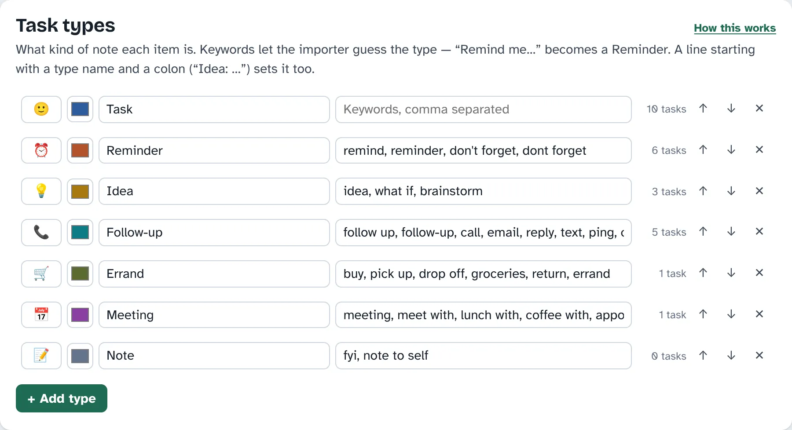
- 1Icon shown on cards.
- 2Color.
- 3Name. Typing
#nameor “Name:” sets it. - 4Keywords that set the type on import — “remind me” makes a Reminder.
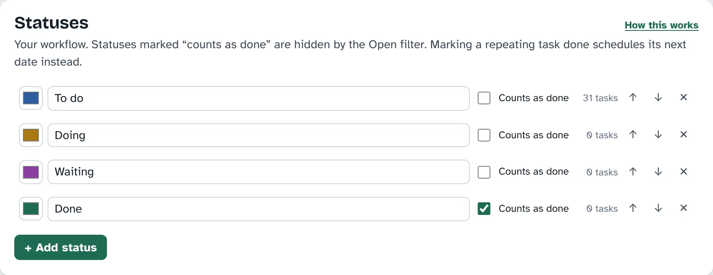
- 1Counts as done. Done statuses drop out of the Open filter.
- 2Order is your workflow, left to right on the board.
- Priorities: the top one is most important, and
!1means the first. The Todoist export spreads them across p1–p4. - Statuses: keep at least one that isn’t done. Marking a repeating task done schedules its next date instead.
- Durations: the time estimates people pick from. Grouped by duration, each is a column and a task lands in the smallest one that fits.
Custom fields
Track anything else: client, energy, location, cost.
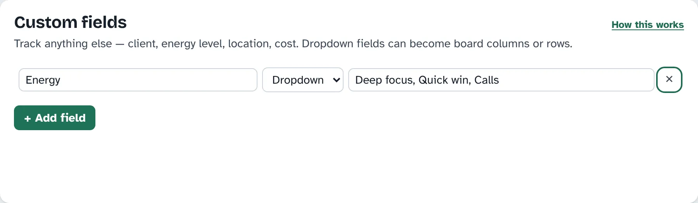
- 1Field type: text, number, date, dropdown or checkbox.
- 2Dropdown options, comma-separated.
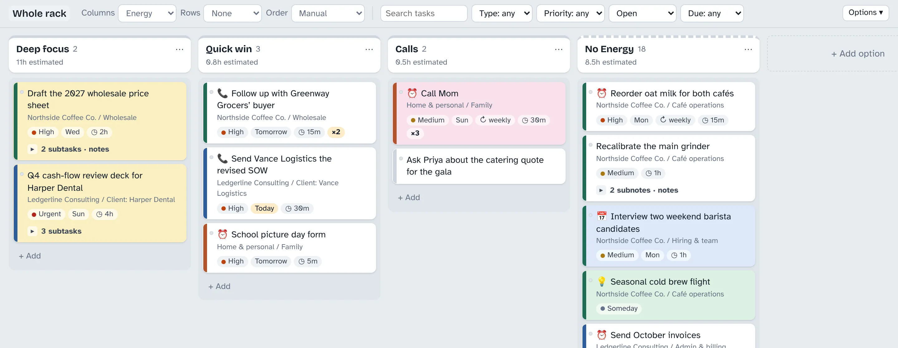
- 1Dropdown fields can become board columns or rows.
Backups & setup templates
Your data never leaves the browser unless you download it.
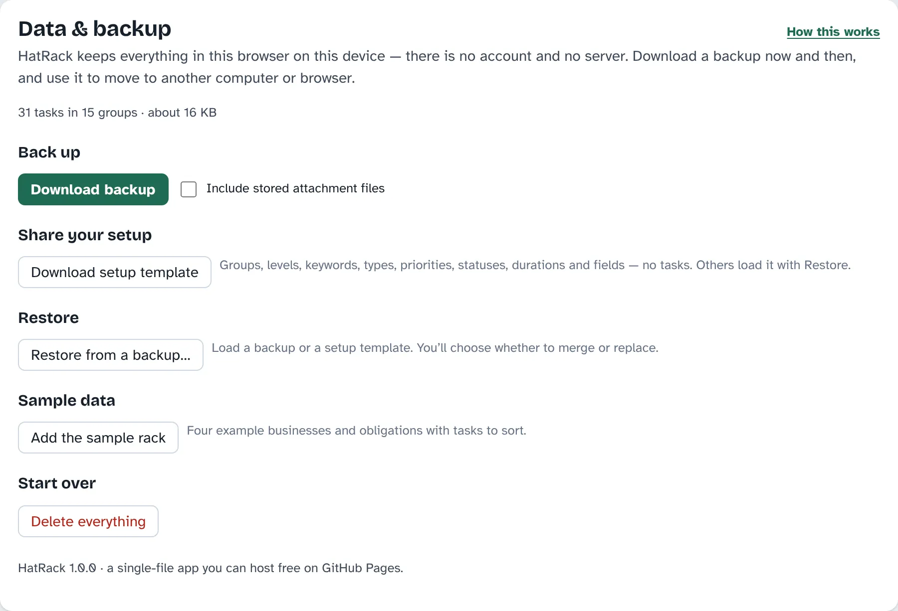
- 1Download backup: everything, optionally with stored files.
- 2Download setup template: groups, levels, keywords, types, priorities, statuses, durations and fields — no tasks.
- 3Restore a backup (merge or replace) or apply a template.
- 4Delete everything. Undo works until you close the tab.
Move to another device
Merge adds what’s missing (groups and types with the same name are combined). Replace swaps everything.
Give a team the same structure
Applying adds anything missing, matched by name, and keeps everyone’s own tasks.
Put HatRack online
Free hosting on GitHub Pages, plus an icon for your phone.
The files
index.htmlthe appguide.htmlthis guideguide/its screenshots — keep the folderapple-touch-icon.pngiPhone home-screen iconicon-192.png · icon-512.pngAndroid and desktop iconsmanifest.webmanifestmakes it installable.nojekylltells GitHub to serve files as-isREADME.mdnotes for the repository
GitHub Pages
- Create a repository on GitHub.
- Upload every file and the
guidefolder from the download. - Settings → Pages → Deploy from a branch → main, / (root) → Save.
- After a minute, open
https://your-name.github.io/repository-name/.
Any static host works the same way. You can also just double-click index.html on your computer.
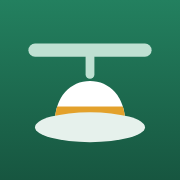
Add it to a phone
iPhone: open the address in Safari → Share → Add to Home Screen. Android: Chrome menu → Add to Home screen or Install app.
The home-screen app keeps its own data, separate from the browser tab. Move tasks across with Backup → Restore.
Keyboard
Hands on the keys, sorting goes faster.
Anywhere
- N or /
- Quick add
- I
- Import
- T
- Triage
- E
- Export
- G
- This guide
- ?
- Shortcuts sheet
- Ctrl/⌘Z
- Undo
- Esc
- Close, or clear the selection
Cards
- Ctrl/⌘-click
- Select one more
- Shift-click
- Select a range
- Ctrl/⌘A
- Select all shown
- 1–9
- Send the selection to that column
- Ctrl/⌘C V
- Copy, paste into the hovered column
- Ctrl/⌘D
- Duplicate
- Delete
- Delete
- → ←
- Expand or fold the focused card
Triage
- 1–9
- Pick a group
- Enter
- Next
- ⌫
- Up a level
- T P
- Cycle type, priority
- S
- Skip
- D
- Mark done
- ←
- Back
Phones & dark mode
Works on a phone; looks right at night.
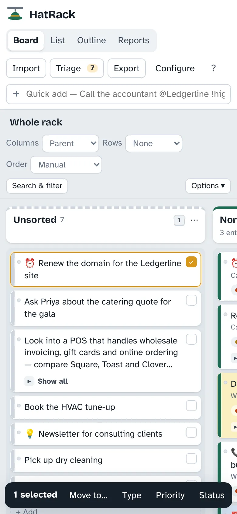
- 1Tick boxes are always visible on touch screens.
- 2The selection bar scrolls sideways: Move to, Nest under, Color and more.
- 3Search & filter opens the filters.
Drag-and-drop depends on the phone’s browser. When it doesn’t work, tick cards and use Move to… or Nest under… in the bar.
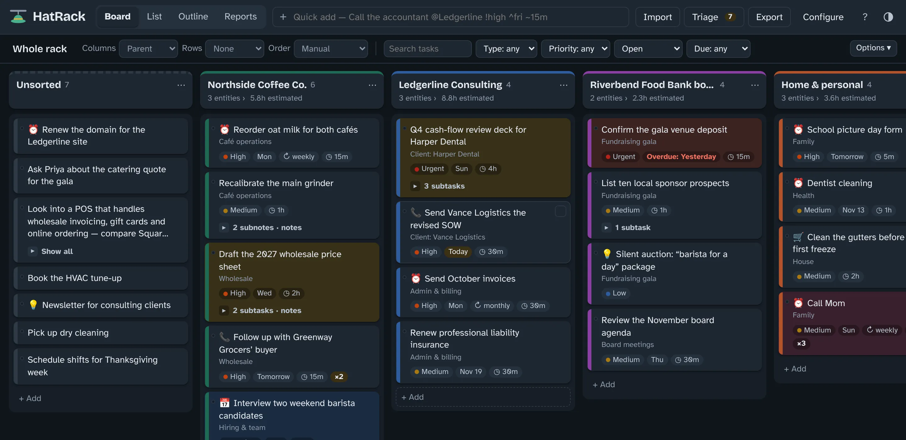
Questions
My tasks are gone.
Check you’re in the same browser, at the same address, and not in a private window. The home-screen app and the browser tab keep separate data. If you have a backup, Configure → Data → Restore brings everything back.
Todoist says the file has too many tasks.
Todoist takes up to 300 tasks per project. In Export, turn on “One file per section” and import each file into its own project.
A note went to the wrong group.
A keyword matched. Edit the keywords in Configure → Groups & levels, or untick “Auto-sort” in Import for that paste.
I can’t nest a card there.
Subtasks go three levels deep, and a task can’t go inside its own subtask. The drop target stays un-highlighted when nesting isn’t possible.
Where are attached files kept?
In this browser’s own storage. Tick “Include stored attachment files” when you back up to carry them to another device. Links work everywhere.
Can my team work on one shared board?
Not yet — each person has their own rack. Share a setup template so everyone uses the same groups, and share exports for the tasks themselves.
Does anything get uploaded?
No. HatRack has no server. Data leaves your browser only when you download a backup or an export.
What’s new in 1.1
- Subtasks. Drag a card onto another card — on the board or in the outline — to nest it. Up to three levels, each with its own dates and status.
- Drag in the outline. Move tasks between groups, reorder them, nest them, and move subnotes from task to task.
- Three-line previews. Long titles and notes fold away; expand a card to read everything.
- Card colors from the editor, the right-click menu or the selection bar.
- Right-click menu on cards: color, add subtask, nest, move, duplicate.
- Setup templates and smarter merging, so a team can share one structure.
- Home-screen icon and install support for phones.
- This guide, built into HatRack’s Help menu, with “How this works” links in every dialog.
HatRack 1.1 · Screens show the sample rack (Configure → Data → Add the sample rack).